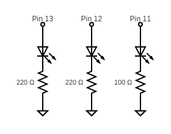

This is my arduino code:
// Credit to Microsoft CoPilot and Robotics Back-End on Youtube https://www.youtube.com/watch?v=VlTU9Vk9XVw for partial help
// in developing this code.
// variables to store the time in ms that the led last changed states (OFF/ON)
unsigned long previousMS1 = 0;
unsigned long previousMS2 = 0;
unsigned long previousMS3 = 0;
// a unique time interval in ms for each led, to alternate between on and off
const unsigned int interval1 = 1000;
const unsigned int interval2 = 500;
const unsigned int interval3 = 2000;
// booleans to switch for on/off states for each led
bool state13 = false;
bool state12 = false;
bool state11 = false;
// the setup function runs once when you press reset or power the board
void setup() {
// initializing 3 pins for 3 leds
pinMode(13, OUTPUT);
pinMode(12, OUTPUT);
pinMode(11, OUTPUT);
}
// the loop function runs over and over again forever
void loop() {
// a variable that is updated on every loop to keep track of how long the program has been running
// in order to determine when to switch led on or off.
unsigned long currentMillis = millis();
// Each of these if statements checks if the time between total time the program has been running and the time of the last
// state switch is equivalent to the interval and thus needs to be switched.
// If true then the variables are updated and the updatedstatus is transmitted to the pin.
if (currentMillis - previousMS1 >= interval1) {
previousMS1 = currentMillis;
state13 = !state13;
digitalWrite(13, state13);
}
if (currentMillis - previousMS2 >= interval2) {
previousMS2 = currentMillis;
state12 = !state12;
digitalWrite(12, state12);
}
if (currentMillis - previousMS3 >= interval3) {
previousMS3 = currentMillis;
state11 = !state11;
digitalWrite(11, state11);
}
}
Here is my circuit diagram:
Here are my calculations for resistors:

1. Here is my graph:
2. There are 14 I/O pins on the Arduino Uno board and 6 input pins so there could be 20 leds blinking independently. For the circuit to run correctly, the current would need to stay at about 20 mA. 4. When testing different blink intervals, I was unable to detect even a flicker once the interval was down to 10 ms. 5. Yes, I used Microsoft CoPilot to help me with some of the arduino code and some of the HTML. To figure out how to run 3 LEDs independently I used this Youtube Tutorial. I then asked Copilot to help correct my errors as I reworked it for 3 LEDs. While I was coding the HTML I asked Copilot for help formatting the code and LaTeX equations. It was able to give me partially helpful answers but I had to consult stackoverflow and documentation to get the Javascript CDNs to work correctly. I also asked for some reminders about small HTML formatting things.